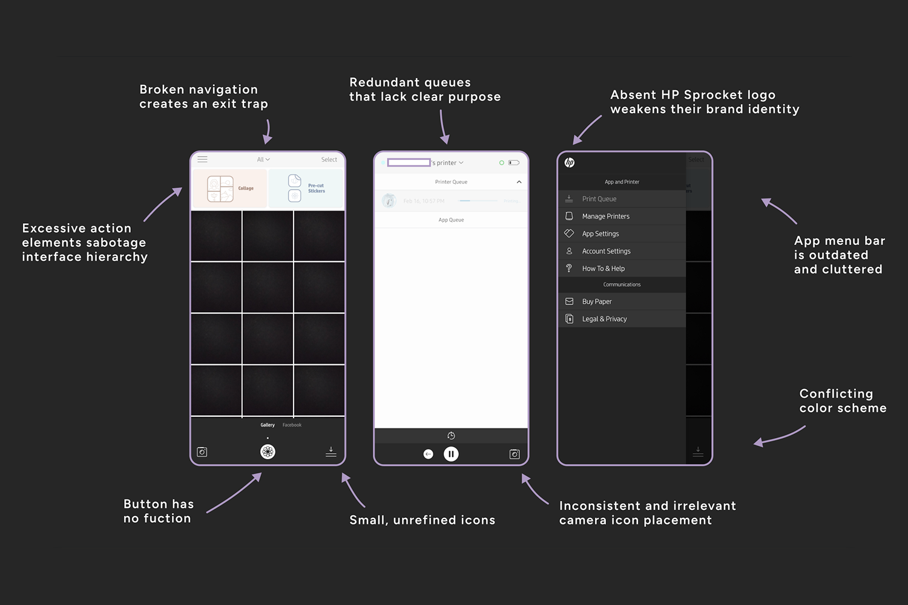
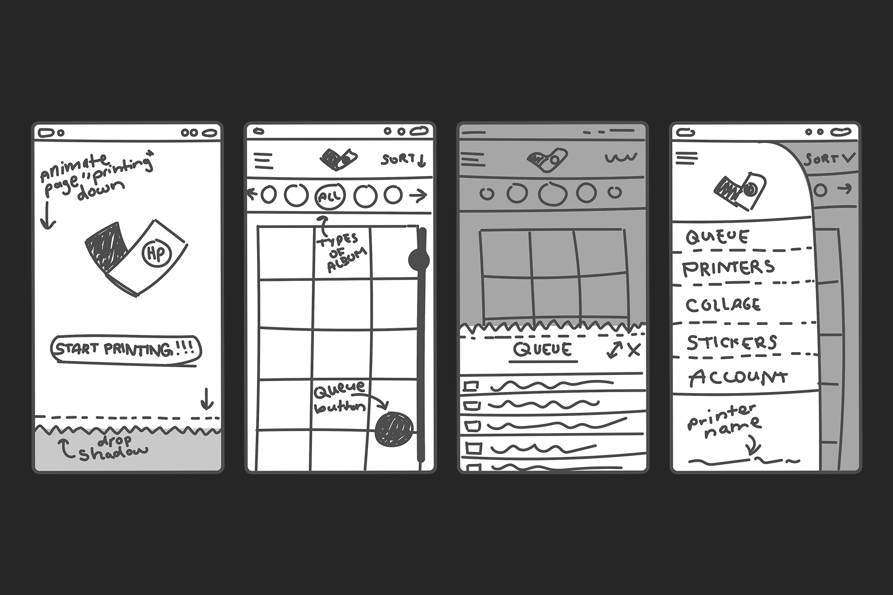
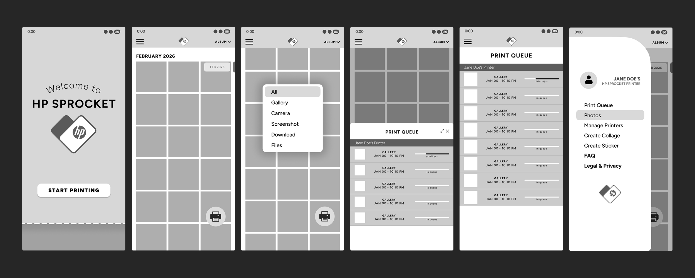

HP Sprocket
Case Study of the revised HP Sprocket app
The Problem
The HP Sprocket app suffers from broken components and a weak visual hierarchy. Visually, the experience feels unrefined and unpolished. Confusing navigation and layout create unnecessary friction that frustrates potential users.

Overview
I own a HP Sprocket - a small, portable, photo printer. It was a gift that should’ve sparked creativity.
Instead, it has just collected dust. As a designer, it’s sad that this tool is held hostage by its own software.
The app is clunky and unreliable, and worst of all: it’s required. I stopped using a product I loved, since its
software didn't love me back.

The Process
The challenge was harmonizing creativity with functionality. Constant trial and error became my second language,
transforming my creative process into a structured, problem-solving methodology. I initially explored ideas full
of personality and expression, such as a carousel interaction for the album navigation. While I loved its character,
I realized it compromised the visual hierarchy. I then pivoted toward a minimalist layout by integrating the mobile
navigation bar into the background for a seamless feel. This allowed me to prioritize clarity over flair, balancing
effortless navigation with visual interest. Refining these concepts required many rounds of iteration before moving
into high-fidelity wireframes.
Growth and Insights
Redesigning the HP Sprocket app taught me that high-fidelity wireframing is essential for UX testing. I streamlined user navigation
by relocating distracting components from the interface. My redesign was centered on an ideal path: quick
entry > easy album selection > clear print status. Peer critiques were crucial, leading to a natural UX design. My own frustration inspired
this project. Ultimately, I learned how much a poor interface directly damages brand status and user retention. Even after purchasing a product,
users will still walk away after a frustrating experience. Great design is the key to keeping customers connected to a brand. The journey of this
project was every bit as rewarding as getting it finished.
